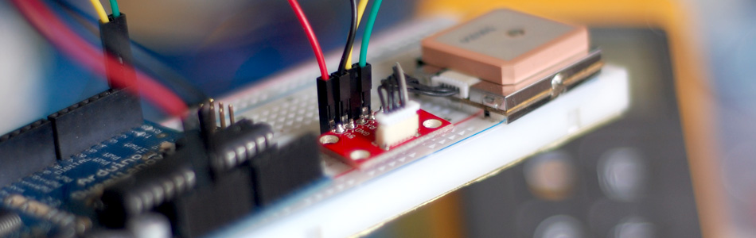

Finding Location With The EM-406A GPS + Arduino

GPS, Global Positioning System, is a system for determining location using satellites and some really complex math and general relativity. But regardless of how it works, it is really cool, and pretty inexpensive considering what it is doing. For this article I'm going to get you up and running with the EM-406A GPS (available at SparkFun ) and your Arduino, code and all.
The EM-406A GPS is a pretty simple device, you just power it on, and it works, you just need a way to read the serial output into your Arduino. There are two simple ways of doing this. You can use the GPS Arduino shield from SparkFun, or SparkFun also sells a breakout board if you are like me and don't really like shields.
A couple things you may not know - GPS can be slow to get a lock on the 4+ satellites needed to get your location, and it actually doesn't work well inside. I know, your phone probably has GPS on it, and it works well inside and locates you pretty quickly, but that's actually assisted GPS and uses cell reception / wifi signals to help quickly hone in on your location. We don't have that with the EM-406A, so just note, you may need to wait a minute before it gets a lock, and it may not get a lock at all under certain circumstances.
Hooking It Up
Using the breakout board or the Arduino shield makes connecting the EM-406A pretty easy, only needing 2 serial connections to operate. Note that when using the breakout board, we are using digital pin 2,3 for the serial connection, and not pins 0/1 who are the normal serial ports. This is because we are using a software serial connection so that we can still output to the Arduino software serial monitor and read the output. It also has the added benefit of being able to upload a new sketch without disconnecting the GPS first.
If you are using the Arduino Shield, you just need to make sure that the D-Line/UART switch is switched to "D Line" and not "UART". UART is the arduino's built-in hardware serial connection - But we need this to output the findings. Also... make sure the shield is turned on.
Just note that the GPS requires 5V so it wont work with a 3.3v Arduino like the lilypad or 3v Pro.
Code
For this tutorial I am including 2 sketches. One of them is actually Sparkfun's example and just outputs everything to the serial monitor - And I mean everything! Time, location, speed etc. Im including it here because it is helpful to be able to see everything you can get from this- Just take note of their license on the code.
{kind=link}
{kind=link}
The other sketch does something I have seen a lot of people asking about. It tells you your distance from a specific location - in this case, I have it set to the north pole, but you can easily change it to any spot you need. So in the serial monitor it will just tell you how far you are from the north pole, in miles.
To help you out, I wrote a function to do this that will return the value in miles, nautical miles, or kilometers. You can use this to create reverse geo-caching gifts or have it trigger something every X miles.
To make this code work, before you load the code, or even open the Arduino program, we need to place both the “NewSoftSerial” AND “TinyGPS” folders into your Arduino Library. If you don’t know where that is by default, Look to the right.
If you click the download button to the right of “Arduino” you can download the whole thing as a zip, so you dont need to copy all the files.
Default Library Folder Location
On your Mac:: In (home directory)/Documents/Arduino/libraries
On your PC:: My Documents -> Arduino -> libraries
On your Linux box:: (home directory)/sketchbook/libraries
Article taken from bildr.org with minor changes - I am the original author of this content